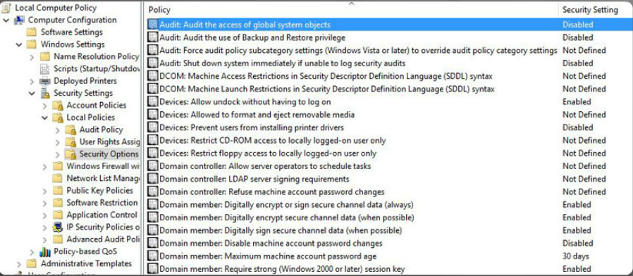
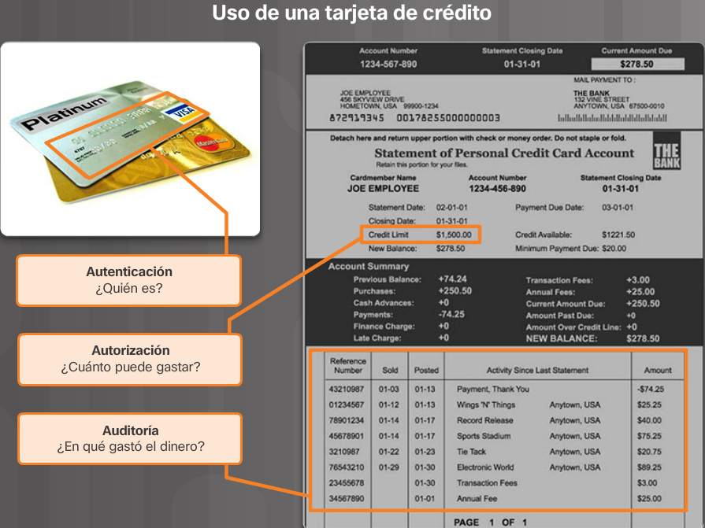

El cubo de destrezas de ciberseguridad
El término "hecicero" es una etiqueta que describe a los profesionales en ciberseguridad que protegen el mundo cibernético. Como los hechiceros del mundo místico, los hechiceros cibernéticos
están interesados en promover el bien y proteger a otros. John McCumber es uno de los primeros hechiceros en ciberseguridad. Desarrolló un marco de trabajo denominado Cubo de McCumber que
los hechiceros de ciberseguridad utilizan para proteger el mundo cibernético. El cubo de McCumber se parece al Cubo de Rubik.
La primera dimensión del cubo de destrezas de ciberseguridad incluye los tres principios de seguridad informática. Los profesionales en ciberseguridad hacen referencia a las tres principios
como la Tríada de CID. La segunda dimensión identifica los tres estados de información o de datos. La tercera dimensión del cubo identifica los poderes de los hechiceros que proporcionan protección.
Estos poderes son las tres categorías de mecanismos de las medidas de ciberseguridad.
En el capítulo también se analiza el modelo de ciberseguridad de ISO. El modelo representa un marco de trabajo internacional para estandarizar la administración de los sistemas de información.
Los principios de seguridad.
La primera dimensión del cubo de destrezas de ciberseguridad indentifica los objetivos para proteger al mundo cibernético. Los objetivos identificados en la primera dimensión son los pruncipios del mundo de la
ciberseguridad. Estos tres principios son la confidencialidad, integridad y disponibilidad. Los principios proporcionan el enfoque y permiten al hechicero cibernético priorizar las acciones en la protección del mundo
cibernético.
La confidencialidad previene a divulgación de información a las personas los recursos o los procesos no autorizados. La integridad hace referencia a la precisión, la uniformidad y la confiabilidad de datos. Por último, la
disponibilidad garantiza que los usuarios pueden tener acceso a la información cuando sea necesario. Utilice el acrónimo CID para recordar estos tres principios.
Más que solo información
El entorno de aprendizaje de netacad.com es una parte importante de la experiencia general del curso para los estudiantes e instructores de Networking Academy. Este material del curso en línea incluye el texto del curso y medios interactivos relacionados, laboratorios en papel y muchos tipos diferentes de cuestionarios. Este material proporciona comentarios pertinentes para
ayudarlo a evaluar su progreso a lo largo del curso.
El material de este curso se presenta mediante una amplia variedad de tecnologías como texto, gráficos, voz, video e interacciones enriquecedoras. Estas tecnologías ayudan a facilitar la manera en que las personas trabajan, viven, juegan y aprenden.
La red e Internet afectan a las personas de distintas maneras en las distintas partes del mundo. Si bien trabajamos con instructores de todo el mundo para crear este material, es importante que trabaje con su instructor y sus compañeros de curso para asegurarse de que el contenido del curso se aplique a su situación local.
Estados de los datos
El mundo cibernético es un mundo de datos; por lo tanto, los hechiceros cibernéticos se centran en la protección de los datos. La segunda dimensión del cubo de destrezas de ciberseguridad se concentra en los problemas de proteger todos los estados de los datos en el mundo cibernético. Los datos tienen tres estados posibles:
- Datos en tránsito
- Datos almacenados
- Datos en proceso
Medidas de ciberseguridad
La tercera dimensión del cubo de destrezas de ciberseguridad define los tipos de poderes a los que un hechicero en ciberseguridad recurre para proteger al mundo cibernético. Los profesionales en ciberseguridad deben utilizar todos los poderes disponibles a su disposición para proteger los datos del mundo cibernético.
El cubo de destrezas de ciberseguridad identifica los tres tipos de poderes e intrumentos utilizados para proporcionar protección. El primer tipo de poder incluye tecnologías, dispositivos y productos disponibles para proteger los sistemas de información y mantener alejados a los delincuentes cibernéticos. Los profesionales
en ciberseguridad tienen una reputación por dominar las herramientas tecnológicas a su disposición. Sin embargo, McCumber recuerda que las herramientas tecnológicas no son suficientes para derrotar a los delincuentes informáticos. Los profesionales en ciberseguridad también deben crear una defensa sólida al establecer
las políticas, los procedimientos y las pautas que permiten a los ciudadanos del mundo cibernético mantenerse seguros y seguir las prácticas adecuadas. Por último, al igual que el mundo de los hechiceros, los ciudadanos del mundo cibernético deben esforzarse por obtener más conocimientos sobre su mundo y los peligros
que amenazan su mundo. Deben buscar continuamente un mayor conocimiento y establecer una cultura de aprendizaje y conciencia.

Principios de confidencialidad
La confidencialidad previene la divulgación de información a las personas los recursos y los procesos no autorizados. Otro término para la confidencialidad es el de privacidad. Las organizaciones restringen el acceso para asegurar que solo los operadores autorizados pueden usar los datos u otros recursos de red.
Por ejemplo, un programador no debe tener acceso a la información personal de todos los empleados.
Las organizaciones necesitan capacitar a los empleados sobre las mejores prácticas en la protección de la información confidencial para protegerse a sí mismos y a la organización de los ataques. Los métodos utilizados para garantizar la confidencialidad incluyen el cifrado de datos, la autenticación y el control de acceso.
Protección de la privacidad de los datos
Las organizaciones recopilan grandes cantidades de datos. La mayor parte de estos datos no es confidencial porque está públicamente disponible, como nombres y números de teléfono. Otros datos recopilados, sin embargo, son confidenciales. La información confidencial hace referencia a los datos protegidos contra el acceso no autorizado para proteger a una persona u organización. Existen tres tipos de información confidencial:
- La información personal en la información de identificación personal (PII) que lleva hacia una persona. En la Figura 2 se enumera esta categoría de datos.
- La información comercial es la información que incluye todo lo que representa un riesgo para la organización si el público o la competencia la descubre. En la Figura 3 se enumera esta categoría de datos.
- La información clasificada es información que pertenece a una entidad gubernamental clasificada por su nivel de confidencialidad. En la Figura 4 se enumera esta categoría de datos.

Fig.1

Fig.2

Fig.3

Fig.4
Control de acceso
El control de acceso define varios esquemas de protección que evita el acceso no autorizado a una computadora, red, base de datos o a otros recursos de datos. El concepto de AAA involucra tres servicios de seguridad: Autenticación, Autorización y Auditoría. Estos servicios proporcionan el marco de trabajo principal para controlar el acceso.
La primera 'A' de AAAA representa la autenticación. Autenticación Verifica la indentidad de un usuario para evitar el acceso no autorizado. Los usuarios prueban su identidad con un nombre de usuario o una Id. Además, los usuarios deben verificar su identidad mediante una de las siguientes maneras, como se muestra en la figura 1:
- Algo que saben (Ej. contraseña)
- Algo que tienen (Ej. token o tarjeta)
- Algo que so (Ej. Huella digital)
Contabilidad Rastrea las actividades de los usuarios, incluidos los sitios a los que tienen acceso, la cantidad de tiempo que tienen acceso a los recursos y los cambios realizados. Por ejemplo, un banco hace un seguimiento de cada cuenta del cliente. Una auditoría de ese sistema puede revelar el tiempo y la cantidad de todas las transacciones y el empleado o el sistema que ejecutaron las transacciones. Los servicios de auditoría de ciberseguridad trabajan de la misma manera. El sistema realiza un seguimiento de cada transacción de datos y proporciona resultados de auditoría. Un administrador puede configurar las políticas de la computadora, como se muestra en la Figura 3, para habilitar la auditoría del sistema.
El concepto de AAA es similar al uso de una tarjeta de crédito, como se indica en la Figura 4. La tarjeta de crédito identifica quién la usa y cuánto puede gastar el usuario de ésta y explica cuántos elementos o servicios adquirió el usuario.
La auditoría de la ciberseguridad rastrea y monitorea en tiempo real. Sitios web, como Norse, muestran los ataques en tiempo real según los datos recopilados como parte de una auditoría o sistema de seguimiento.
Haga clic aquí para visitar el sitio web de seguimiento en tiempo real de Norse.
Fig.1
Fig.2
Fig.3
Fig.4
Leyes y responsabilidades
La confidencialidad y la privacidad parecen intercambiables, pero desde un punto de vista legal, tienen distintos significados. La mayoría de los datos de privacidad son confidenciales, pero no todos los datos confidenciales son privados. El acceso a la información confidencial ocurre después de confirmar la autorización apropiada. Las instituciones financieras, los hospitales,
los profesionales médicos, los estudios jurídicos y las empresas administran la información confidencial. La información confidencial tiene estado privado. Mantener la confidencialidad es más que un deber ético.
La privacidad es el uso adecuado de los datos. Cuando las organizaciones recopilan información proporcionada por los clientes o empleados, solo pueden utilizar esos datos para su objetivo previsto. La mayoría de las organizaciones requieren que un cliente o empleado firme un formulario de autorización que otorga permiso a la organización para usar los datos.
Todas las leyes enumeradas en la figura incluyen una disposición para abordar la privacidad que comienza con las leyes de EE. UU. en la Figura 1. La Figura 2 enumera una muestra de los esfuerzos internacionales. La mayoría de estas leyes son una respuesta al crecimiento masivo de la recopilación de datos.
El creciente número de estatutos relacionados con la privacidad crea una enorme carga en las organizaciones que recopilan y analizan datos. Las políticas son la mejor forma de que una organización cumpla con el número cada vez mayor de leyes relacionadas con la privacidad. Las políticas permiten a las organizaciones aplicar reglas, procedimientos y procesos específicos al recopilar, almacenar y compartir datos.
Fig.1

Fig.2
Principio de integridad de los datos
La integridad es la precisión, uniformidad y confiabilidad de los datos durante su ciclo de vida. Otro término para la integridad es el de calidad. Los datos experimentan varias operaciones como captura, almacenamiento, recuperación, actualización y transferencia. Las entidades no autorizadas deben mantener inalterados los datos durante todas estas operaciones.
Los métodos usados para garantizar la integridad de los datos incluyen la función de hash, las comprobaciones de validación de datos, las comprobaciones de consistencia de los datos y los controles de acceso. Los sistemas de integridad de datos pueden incluir uno o más de los métodos mencionados anteriormente.
La necesidad de contar con la integridad de datos.
La integridad de los datos es un componente fundamental de la seguridad informática. La necesidad de contar con la integridad de los datos varían según cómo una organización usa los datos. Por ejemplo, Facebook, no verifica los datos que un usuario publica en un perfil. Un banco u organización financiera asgina una mayor importancia a la integridad de los datos que Facebook. Las transacciones y las cuentas de los
clientes deben ser precisas. En una organización de servicios de salud, la integridad de datos puede ser una cuestión de vida o muerte. La información sobre prescripciones debe ser precisa.
Proteger la integridad de los datos es un desafío constante para la mayoría de las organizaciones. La pérdida de la integridad de los datos puede ligrar que todos los recursos de los datos sean dudosos o inutilizables.

Nivel crítico.

Nivel alto.

Nivel intermedio.

Nivel bajo.
Verificaciones de integridad.
Una verificación de integridad es una manera de medir la uniformidad de una recopilación de datos (un archivo, una imagen, un regristro). La verificación de integridad usa la insatantánea para asegurar que los datos permanezcan sin cambios.
Un checksum verifica la integridad de los archivos o cadenas de caracteres, antes y después de que ellos transfieran de un dispositivo a otro a través de una red local o Internet. Los checksums convierten simplemente cada pieza de información a un valor y suman el total.
Para comprobar la integridad de los datos, un sistema receptor simplementerepite el proceso. Si las dos sumas son iguales, los datos son válidos (Figura 1). Si no son iguales, se produjo un cambio en alguna parte de la línea (Figura 2).
Las funciones de hash comunes incluyen MD5, SHA-1, SHA-256 y SHA-512. Estas funciones de hash usan algoritmos matemáticos complejos. El valor de hash está sencillamente allí para la comparación. Por ejemplo, después de descargar un archivo, el usuario puede verificar la integridad del archivo
al comparar los valores de hash de la fuente con el que genera cualquier calculadora de hash.
Las organizaciones utilizan el control de versiones para evitar cambios accidentales realizados por usuarios autorizados. Dos usuarios no pueden actuañizar el mismo objeto. Los objetos pueden ser archivos, registros de la base de datos o transacciones. Por ejemplo, el primer usuario en abrir un
documento tiene permiso para cambiar ese documento, la segunda persona, tiene una versión de solo lectura.

Figura.1.

Figura.2.
La autorización determina quién tiene accesi a los recursos de una organización según la necesidad de información. Por ejemplo, los permisos de archivos y los controles de acceso del usuario garantizan que solo ciertos usuarios puedan modificar los datos. Un administrador puede configurar permisos de solo lectura para un archivo. Como resultado, un usuario con acceso a ese archivo no puede realizar ningún cambio.
El principio de disponibilidad.
La disponibilidad de los datos es el principio que se utiliza para describir la necesidad de mantener la disponibilidad de los sistemas y servicios de información en todo momento. Los ataques cibernéticos y las fallas en el sistema pueden impedir el acceso a los sistemas y servicios de información.
Por ejemplo, alterar la disponibilidad del sitios web de la competencia al eliminarla puede proporcionar una ventaja a su rival. Estos ataques de denegación de servicio (DoS) amenazan la disponibilidad del sistema y evitan que los usuarios legítimos tengan acceso y usen sistemas de información cuando sea necesario.
Los métodos utilizados para garantizar la disponibilidad incluyen la redundancia del sistema, las copias de seguridad del sistema, mayor recuperabilidad del sistema, mantenimiento del equipo, sistemas operativos y software actualizados y planes para recuperarse rápidamente de desastres no planificados.
Los cinco nueves
Las personas usan distintos sistemas de información en sus vidas cotidianas. Las computadoras y los sistemas de información controlan las comunicaciones, el transporte y la fabricación de productos. La disponibilidad contínua de los sistemas de información es fundamental para la vida moderna. El término "alta disponibilidad",
describe los sistemas diseñados para evitar el tiempo de inactividad.
La alta disponibilidad asegura un nivel de rendimiento por un período más alto de lo normal. Los sistemas de alta disponibilidad suelen incluir tres principios de diseño (Figura 1):
- Eliminar puntos sencillos de falla.
- Proporcionar una conexión cruzada confiable.
- Detecte fallas a medida que se producen.
Fig. 1
Fig. 2
Asegurar la disponibilidad.
Las organizaciones pueden garantizar la disponibilidad al implementar lo siguiente:
- Realizar el mantenimiento del equipo.
- Realizar actualizaciones del SO y del sistema.
- Realizar las pruebas de copia de respaldo.
- Realizar una planificación para evitar desastres.
- Realizar implementaciones de nuevas tecnologías.
- Realizar el monitoreo de actividades inusuales.
- Realizar la prueba de disponibilidad.
Actividad: Principios de ciberseguridad.

Tipos de almacenamiento de datos.
Los datos almacenados hacen referencia a los datos guardados. Los datos almacenados significan que un tipo de dispositivo de almacenamiento conserva los datos cuando ningún usuario o proceso los utiliza. Un dispositivo de almacenamiento puede ser local (en un dispositivo informático) o centralizado (en la red).
Existen varias opciones para almacenar datos.
Almacenamiento de conexión directa (DAS) proporciona almacenamiento conectado a una computadora. Una unidad de disco duro o una unidad de memoria flash USB son un ejemplo de almacenamiento de conexión directa. De manera predeterminada, los sistemas no están configurados para compartir el almacenamiento de conexión directa.
La Matriz redundante de discos independientes (RAID) utiliza varios discos duros en una matriz, que es un método para combinar varios discos de modo que el sistema operativo los vea como un solo disco. RAID proporciona un mejor rendimiento y una mejor tolerancia a fallas.
Un dispositivo de almacenamiento conectado a la red (NAS) es un dispositivo de almacenamiento conectado a una red que permite el almacenamiento y la recuperación de datos desde una ubicación centralizada por parte de los usuarios autorizados de la red. Los dispositivos de NAS son flexibles y escalables,
lo cual significa que los administradores pueden aumentar la capacidad según sea necesario.
Una arquitectura de red de área de almacenamiento (SAN) es un sistema de almacenamiento con base en la red. Los sistemas de SAN se conectan a la red mediante las interfaces de alta velocidad que permiten un mejor rendimiento y la capacidad para conectarse varios servidores a un repositorio centralizado de almacenamiento en disco.
El almacenamiento en la nube es una opción de almacenamiento remoto que usa el espacio en un proveedor del centro de datos y es accesible desde cualquier computadora con acceso a Internet. Google Drive, iCloud y Dropbox son ejemplos de proveedores de almacenamiento en la nube.
Desafíos en la protección de los datos almacenados
Las organizaciones tienen una tarea difícil al intentar proteger los datos almacenados. Para mejorar el almacenamiento de datos, las empresas pueden automatizar y centralizar las copias de respaldo de datos.
El almacenamiento de conexión directa puede ser uno de los tipos más difíciles de almacenamiento de datos en administrar y controlar. El almacenamiento de conexión directa es vulnerable a los ataques maliciosos en el host local. Los datos almacenados también pueden incluir datos de copias de respaldo. Las copias de respaldo
pueden ser manuales o automáticas. Las organizaciones deben limitar los tipos de datos almacenados en el almacenamiento de conexión directa. En particular, una organización no almacenaría los datos críticos en dispositivos de almacenamiento de conexión directa.
Los sistemas de almacenamiento en red ofrecen una alternativa más segura. Los sistemas de almacenamiento en red incluidos RAID, SAN y NAS proporcionan mayor rendimiento y redundancia. Sin embargo, los sistemas de almacenamiento de red son más complicados para configurar y administrar. También manejan más datos, lo que presenta un mayor
riesgo para la organización si falla el dispositivo. Losdesafíos particulares de los sistemas de almacenamiento en red incluyen la configuración, la prueba y la supervisión del sistema.
Métodos de transmisión de datos
La transmisión de datos implica el envío de la información de un dispositivo a otro. Existen diversos métodos para transmitir información entre dispositivos, entre los que se incluyen los siguientes:
- Red de transferencia: Usa medios extraíbles para mover físicamente los datos de una computadora a orta.
- Red cableada: Usa cables para transmitir datos.
- Red inalámbricas: Usa ondas de radio para transmitir datos.
Las redes cableadas incluyen redes de cableado de cobre y fibra óptica. Las redes cableadas pueden servir a un área geográfica local (red de área local) o pueden abarcar grandes distancias (redes de área amplia).
Las redes inalámbricas están reemplazando a las redes cableadas. Las redes inalámbricas son cada vez más rápidas y son capaces de manejar más ancho de banda. Las redes inalámbricasextienden la cantidad de usuarios invitados con los dispoitivos móvies en la oficina pequeña y oficina doméstica (SOHO) y las redes empresariales.
Las redes cableadas e inalámbricas usan paquetes o unidades de datos. El término paquete se refiere a una unidad de datos que se desplaza entre el origen y un destino de la red. Los protocolos estándar como el protocolo de Internet (IP) y el Hypertext Transfer Protocol (HTTP) definen la estructura y formación de paquetes de datos. Estos estándares son de código abierto y están disponibles al público. La protección de la confidencialidad, integridad y disponibilidad de los datos transmitidos es una de las repsonsabilidades más importantes de un profesional de ciberseguridad.
Desafíos en ña protección de datos en tránsito.
La protección de los datos transmitidos es uno de los trabajos más desafiantes para un profesional de ciberseguridad. Con el crecimiento de los dispositivos móviles e inalámbricos, los profesionales de ciberseguridad son responsables de protegercantidades masivas de datos que cruzan la red a diario. Los profesionales de ciberseguirdad deben afrontar varios desafíos al proteger estos datos.
- Protección de la confidencialidad de los datos: los delincuentes cibernéticos pueden capturar, guardar y robar datos en tránsito. Los profesionales cibernéticos deben tomar medidas para contrarrestar estas acciones.
- Protección de la integridad de los datos: los delincuentes cibernéticos pueden interceptar y alterar los datos en tránsito. Los profesionales de ciberseguridad implementan sistemas de integridad de los datos que evalúan la integridad y la autenticidad de los datos transmitidos para responder a estas acciones.
- Protección de la disponibilidad de los datos: los delincuentes informáticos pueden usar dispositivos falsos o no autorizados para interrumpir la disponibilidad de los datos. Un dispositivo móvil simple puede presentarse como un punto de acceso inalámbrico local y engañar a los usuarios desprevenidos al asociarse con el dispositivo falso. Los delincuentes cibernéticos puede secuestrar una conexión autorizada a un servicio o un dispositivo protegido. Los profesionales de seguridad de red pueden implementar sistemas de autenticación mutua para responder a estas acciones. Los sistemas de autenticación mutua requieren que el usuario autentique al servidor y solicita que el servidor autentique al usuario.
Formas de procesamiento y cómputo de datos.
El tercer estado de los datos es el de datos en proceso. Esto se refiere a los datos durante la entrada, la modificación el cómputo o el resultado.
La protección de la integridad de los datos, como ingreso manual de adtos, formulaios de análisis, cargas de archivos y datos recopilados de los sensores. Cada uno de estos métodos representa amenazas potenciales a la integridad de los datos. Un ejemplo de daños a los datos durante el proceso de captación, incluye errores en la entrada de datos o sensores del sistema desconectados, con funcionamiento incorrecto o inoperables.
Otros ejemplos pueden incluir formatos de datos identificación errónea, incorrectos o no coincidentes.
La moficación de los datos se refiere a cualquier cambio en los datos originales, como la modificación manual que realizan los usuarios de los datos, el procesamiento de programas y el cambio de datos, y fallas en los equipos, lo que provoca la modificación de los datos. Los procesos como la codificación y decodificación, compresión y descompresión y cifrado y descifrado son ejemplos de la modificación de los datos. El código malicioso también provoca daños en los datos.
El daño a los datos también ocurre durante el proceso de salida de datos. La salida de datos se refiere a los datos que salen de impresoras, pantallas electrónicas o directamente a otros dispositivos. La precisión de los datos de salida es fundamental ya que el resultado proporciona información y afecta la toma de decisiones.
Los ejemplos de daños a los datos incluyen el uso incorrecto de delimitadores de datos, configuraciones incorrectas de comunicación e impresoras configuradas incorrectamente.
Desafíos en la protección de datos en proceso
La protección contra la modificación de los datos no válidos durante el proceso puede tener un efecto adverso. Los errores de software son el motivo de muchas desgracias y desastres. Por ejemplo, solo dos semanas antes de Navidad, algunos de los comercios minoristas terceris de Amazon eperimentaron un cambio en el precio publicado en sus elementos a solo un centavo. El inconveniente duró una hora. El error provocó que miles de
compradores obtuvieran el descuento de sus vidas y la empresa perdió ingresos. En 2016, el termostato de Nest funcionava incorrectamente y dejó a los usuarios sin calefacción. El termostato de Nedt es una tecnología inteligente propiedad de Google. Una falla de software dejó a los usuarios, literalmente, afuera en el frío. Una actualización de software fue el problema y las baterías del dispositivo se agotaron y le
impidió controlar la temperatura. Como resultado, los clientes no podían calentar sus hogares ni obtener agua caliente en uno de los fines de semana más fríos del año.
La protección de los datos durante el proceso requiere sistemas bien diseñados. Los profesionales de ciberseguirdad diseñan políticas y procedimientos que requieren pruebas, mantenimientos y actualización de sistemas para mantenerlos en funcionamiento con la menor cantidad de errores.

Actividad: Identificar el estado de los datos para una tecnología específica

Medidas de protección tecnológicas con base en software.
Las meddas de protección de software incluyen programas y servicios que protegen los sistemas operativos, las bases de datos y otros servicios que operan en las estaciones de trabajo, los dispositivos portátiles y los servidores. Los administradores instalan las contramedidas o las protecciones basadas en software en los hosts o los servidoes individuales. Existen varias tecnologías basadas en software en los hosts o los servidores individuales. Existen varias tecnologías basadas en software usadas para proteger los activos de la organización:
- Los firewalls de software controlan el acceso remoto a un sistema, los sitemas operativos generalmente incluyen un firewall o un usuario puede adquirir o descargar un software de terceros.
- Los escáneres de redes y puertos detectan y supervisan los puertos abiertos en un host o un servidor.
- Los analizadores de protocolos o los analizadores de firmas, son dispositivos que recopilan y analizan el tráfico de red. Identifican problemas de rendimiento, detectan configuraciones incorrectas, identifican aplicaiones que funcionan de manera incorrecta, establecen una línea de base y patrones de tráfico normal y depuran los problemas de comunicación.
- Los escáneres de vulnerabilidad son progrmas informáticos diseñados para evaluar las debilidades en las computadoras o redes.
- Los sistemas de detección de intrusiones (IDS) basados en el host examinan la actividad en los sistemas host. Un IDS genera archivos de registro y mensajes de alarma cuando detecta actividad inusual. Un sistema que almacena datos confidenciales o que proporciona servicios críticos es un candidato para el IDS basado en host.
Medidas de protección tecnológicas con base en hardware.
Existen varias tecnologías basadas en hardware utilizadas para proteger los activos de la organización.
- Los dispositivos de firewall bloquean el tráfico no deseado. Los firewalls contienen reglas que definen el tráfico permitido dentro y fuera de la red.
- Los sistemas de detección de intrusiones (IDS) exclusivos detectan signos de ataques o de tráfico inusual en una red y envía una alerta.
- Los sistemas de prevención de intrusiones (IPS) detectan signos de ataques o de tráfico inusual en una red, generan una alerta y toman medidas correctivas.
- Los servicios de filtrado de contenido controlan el acceso y la transmisión de contenido inaceptable u ofensivo.

Medidas de protección tecnológicas con base en la red.
Existen varias tecnologías basadas en red que se usan para proteger los activos de la organización:
- La red privada virtual (VPN) es una red virtual segura que usa la red pública (es decir, Internet). La seguridad de una VPN reside en el cifrado del contenido de paquetes entre los terminales que definen la VPN.
- Control de acceso a la red (NAC) requiere un conjunto de verificaciones antes de permitir que un dispositivo se conecte a una red. Algunas verificaciones comunes incluyen la instalación de actualizaiones de software antivirus o de sistema operativo.
- Seguridad de punto a punto inalámbrico incluye la implementación de la autenticación y encriptación.
Medidas de protección tenológicas con base en la nube
Las tecnologías con base en la nube cambian el componente de tecnología de la organización al proveedor de la nube. Los tres servicios principales de computación en la nube incluyen los siguientes:
- Software como servicio (SaaS) permite que los usuarios tengan acceso al software y las bases de datos de la aplicación. Los proveedores de la nube administran la infraestructura. Los usuarios almacenan datos en los servidores del proveedor de la nube.
- Infraestructura como servicio (IaaS) proporciona recursos informáticos virtualizados a través de Internet. El proveedor es el host del hardware, del software, de los servidores y de los componentes de almacenamiento.
- Plataforma como servicio (PaaS) proporciona acceso a las herramientas de desarrollo y a los servicios utilizados para proporcionar las aplicaciones.
Los proveedores de servicios en la nube utilizan dispositivos de seguridad virtual que se ejecutan en un entorno virtual con un sistema operativo preempaquetado y reforzado que se ejecuta en un hardware virtualizado.
Cómo implementar la capacitación y formación en cibersegridad.
Invertir mucho dinero en tecnología no variará si las personas dentro de la organización son el eslabón más débil en el áreade ciberseguirdad. Un programa de reconocimiento de seguridad es sumamente importante para una organización. Un empleado puede no ser malicioso de manera intencionada, pero no conocer cuáles son los procedimientos adecuados. Existen muchas maneras de implementar un programa de capacitación formal:
- Hacer de la capacitación en el conocimiento de la ciberseguridad una parte del proceso de incorporación de los empleados.
- Vincular el conocimiento de la seguridad con los requisitos o las evaluaciones de rendimiento.
- Realizar sesiones de capacitación en personas.
- Completar los cursos en línea.
Establecimiento de una cultura de conocimiento de la ciberseguridad
Los miembros de una organización deben tener en cuenta las poñiticas de seguridad y tener el conocimiento para hacer de la seguridad una parte de sus actividades diarias.
Un programa de reconocimiento de seguridad depende de:
- El entorno de la organización.
- El nivel de amenaza.
Políticas.
Una política de seguridad es un conjunto de objetivos de seguridad para una empresaque incluye las reglas de compartimiento de usuarios y administradores y especificar los requisitos del sistema. Estos objetivos, estas reglas y estos requisitos en conjunto garantizan la seguridad de una red, de los datos y de los sistemas informáticos de una organización. Una política de seguridad completa logra varias tareas:
- Demuestra el compromiso de una organización con la seguridad.
- Establece las reglas para el comportamiento esperado.
- Garantiza la uniformidad en las operaciones del sistema, el softaware y la adquisición y uso de hardware, y el mantenimiento.
- Define las consecuencias legales de violaciones.
- Brinda al personal de seguirdad el respaldo de la administración.
Como se muestra en la figura, una política de seguridad generalmente incluye:
- Políticas de autenticación e identificación. Determinan cuáles son las personas autorizadas que pueden acceder a los recursos de red y describen los procedimientos de verificación.
- Políticas de contraseña. Garantizan que las contraseñas cumplan con requisitos mínimos y se cambien periódicamente.
- Políticas de uso aceptable. Identifican los recursos y el uso de red que son aceptables para la organización. También puede identificar las consecuencias de las violaciones de la política.
- Políticas de acceso remoto. Identifican cómo los usuarios remotos pueden obtener acceso a la red y cuál es accesible de manera remota.
- Políticas de mantenimiento de red. Especifican los sistemas operativos de los dispositivos de la red y los procedimientos de actualización de las aplicaciones de los usuarios finales.
- Políticas de manejo de incidentes. Describen cómo se manejan los incidentes de seguridad.
Estándares.
Los estándares ayudan al personal de TI a mantener la uniformidad en el funcionamiento de la red. Los documentos sobre estándares proporcionan las tecnologías que los usuarios o los programas específicos necesitan,
además de los requisitos o criterios del programa que una organización debe seguir. Esto permite al personal de TI mejorar la eficiencia y simplicidad en el diseño, el mantenimiento y la resolución de problemas.
Uno de los principios de seguridad más importantes es el de uniformidad. Por este motivo, es necesario que las organizaciones establezcan estándares. Cada organización desarrolla estándares para admitir el entorno operativo único.
Por ejemplo, una organización establece una política de contraseñas. El estándar es que las contraseñas requieran un mínimo de ocho caracteres alfanuméricos de letras mayúsculas y minúsculas, con al menos un carácter especial.
Un usuario debe cambiar una contraseña cada 30 días y un historial de contraseñas de 12 contraseñas anteriores garantiza que el usuario cree contraseñas únicas por un año.
Pautas
Las pautas constan de una lista de sugerencias sobre cómo hacer las cosas de manera más eficaz y segura. Son similares a los estándares, pero son más flexibles y generalmente no son obligatorias. Las pautas definen cómo se desarrollan los estñandares y garantizan el cumplimiento de
las políticas de seguridad general.
Algunas de las pautas más útiles conforman las mejores prácticas de una orgranización. Además de las mejores prácticas que definen una organización, las pautas también están disponibles a partir de lo siguiente:
-
Instituto Nacional de Normas y Tecnología(NIST), Centro de recursos de seguridad informática.

-
Departamento de Seguridad Nacional(NSA), Guías para la configuración de seguridad.

-
El estándar de criterios comunes.


Prcedimientos
Los documentos de procedimiento son más detallados que los estándares y las pautas. Los documentos de procedimiento incluyen detalles de implementación que contienen generalmente instrucciones paso a paso y gráficos.
La figura muestra un ejemplo del procedimiento que se usó para cambiar una contraseña. Las grandes empresas deben usar documentos de procedimientos para mantener la uniformidad de la implementación que se necesita para un entorno seguro.
Identificar la categoría de contramedidas

Descripción general del modelo.
Los profesionales de seguridad necesitan proteger la información de manera completa en la organización. Esta es una tarea monumental y no es razonable esperar que una persona tenga todo el conocimiento necesario. La Organización Internacional de Normalización (ISO) y la Comisión Electrotécnica Internacional (IEC) desarrollaron un marco de trabajo global para guiar la administración de la seguridad de la información. El modelo de ciberseguridad de ISO es para los profesionales de la ciberseguridad lo que el modelo de red de OSI es para los ingenieros de redes. Ambos proporcionan un marco para comprender y abordar las tareas complejas.
Dominios de ciberseguridad
La norma ISO/IEC 27000 es un estándar de seguridad informática publicada en 2005 y revisada en 2013. ISO publica los estándares ISO 27000. Si bien los estándares no son obligatorios, la mayoría de los países los utilizan como marco trabajo de facto para implementar la seguridad informática.
Los estándares ISO 27000 describen la implementación de un sistema de administración de seguridad de la información (ISMS) completo. Un ISMS incluye todos los controles administrativos, técnicos y operativos para mantener la información segura dentro de una organización.
Doce dominios independientes representan los componentes del estándar ISO 27000. Estos doce dominios sirven para organizar, en un nivel alto, las vastas áreas de información bajo el término general de seguridad informática.
La estructura del modelo de ciberseguridad de ISO es diferente del modelo de OSI ya que utiliza dominios en lugar de capas para describir las categorías de seguridad. El motivo es que el modelo de ciberseguridad de ISO no es una relación jerárquica. Es un modelo de pares
en el que cada dominio tiene una relación directa con los otros dominios. El modelo de ciberseguridad de ISO 27000 es muy similar al modelo de OSI en que es fundamental que los hechiceros en ciberseguridad comprendan ambos modelos para tener éxito.
Vea el siguiente vídeo para ver una descripción breve.
Objetivos de control
Los doce dominios constan de objetivos de control definidos en la parte 27001 del estándar-
Los objetivos de control definen los requisitos de alto nivel para implementar un ISM completo. El equipo de administración de una organización utiliza los objetivos de control de ISO 27001 para definir y publicar las políticas de seguridad de la organización.
Los objetivos de control proporcionan una lista de comprobación para utilizar durante las auditorías de administración de seguridad. Muchas organizaciones deben aprobar una auditoría de ISMS para obtener una designación de cumplimiento del estándar ISO 27001.
La certificación y el cumplimiento proporcionan confianza para dos organizaciones que deben confiar los datos y las operaciones confidenciales de cada uno. Las auditorías de cumplimiento y de seguridad demuestran que las organizaciones aumentan continuamente su sistema de administración de seguridad informática.
El siguiente es un ejemplo de un objetivo de control: Controlar el acceso a las redes mediante los mecanismos de autenticación adecuados para los usuarios y los equipos.

Controles
El estándar ISO/IEC 27002 define los controles del sistema de administración de seguridad informática. Los controles son más detallados que los objetivos. Los objetivos de control indican a la organización lo que debe hacer. Los controles definen cómo alcanzar el objetivo.
Según el objetivo de control, para controlar el acceso a las redes mediante los mecanismos de autenticación adecuados para los usuarios y los equipos, el control sería el siguiente:
Utilice contraseñas seguras. Una contraseña segura consta de al menos ocho caracteres que son una combinación de letras, números y símbolos (@, #, $, %, etc.) si están permitidos. Las contraseñas distinguen entre mayúsculas y minúsculas, de modo que una contraseña segura contiene letras en mayúsculas y minúsculas.
Los profesionales de ciberseguridad reconocen lo siguiente:
- Los controles no son obligatorios, sino que están ampliamente aceptados y adoptadas.
- Los controles deben mantener la neutralidad del proveedor para evitar la imagen de que respalda a un producto o a una empresa específica.
- Los controles son como las pautas. Esto significa que puede haber más de una manera de cumplir con el objetivo.
Actividad. Identificar los dominios y controles de ISO/IEC 27000

El modelo de ciberseguridad de ISO y la Tríada de CID
La norma ISO 27000 es un marco de trabajo universal para cada tipo de organización. Para usar el marco de trabajo de manera eficaz, una organización debe restringir los dominios,
los objetivos de control y los controles que aplican a su entorno y sus operaciones.
Los objetivos de control de ISO 27001 funcionan como una lista de verificación. El primer paso que una organización toma es para determinar si estos objetivos de control se aplican a la organización.
La mayoría de las organizaciones generan un documento llamado Declaración de aplicabilidad (SOA). La SOA define los objetivos de control que la organización necesita usar.
Las distintas organizaciones dan mayor prioridad a la confidencialidad, integridad y disponibilidad según el tipo de industria. Por ejemplo, Google otorga el valor más alto a la confidencialidad y disponibilidad
de los datos del usuario y menos a la integridad. Google no verifica los datos del usuario. Amazon pone un gran énfasis a la disponibilidad. Si el sitio no está disponible, Amazon no realiza la venta.
Esto no significa que Amazon ignora la confidencialidad a favor de la disponibilidad. Amazon solo da mayor prioridad a la disponibilidad. Por lo tanto, Amazon puede dedicar más recursos y garantizar que
haya más servidores disponibles para manejar las compras de los clientes.
Una organización adapta su uso de los objetivos de control y los controles disponibles para satisfacer de mejor manera sus prioridades con respecto a la confidencialidad, integridad y disponibilidad.

El modelo de ciberseguridad de ISO y los estados de los datos
Los diferentes grupos de una organización pueden ser responssables de los datos de cada uno de los distintos estados. Por ejemplo, el grupo de seguridad de la red es responsable de los datos durante la transmisión.
Los programadores y las personas encargadas del ingreso de los datos son responsables de los datos durante el procesamiento. Los especialistas en soporte de hardware y servidor son responsables de los datos almacenados.
Los controles de ISO abordan especificamente los objetivos de seguridad de los datos de cada uno de los tres estados.
En este ejmplo, los representantes de cada uno de los tres grupos ayudan a identificar los controles que son aplicables y la prioridad de cada control en su área. El representante del grupo de seguridad de la red
identifica los controles que garantizan la confidencialidad, integridad y disponibilidad de todos los datos transmitidos.

El modelo y los mecanismos de protección de la ciberseguridad de ISO.
Los objetivos de control de ISO 27001 se relacionan directamente con las políticas, los procedimientos y las pautas de ciberseguridad de la organización que la administración superior determina. Los controles de ISO 27002 proporcionan dirección técnica. Por ejemplo, la administración superior establece una política que especifica la protección de todos los datos que ingresan o salen de la organización. La implementación de la tecnología para cumplir con los objetivos de la política no involucraría a la administración superior. Es responsabilidad de los profesionales de TI implementar y configurar correctamente el equipo utilizado para satisfacer las directivas de la política establecidas por la administración superior.

Práctica de laboratorio: Instalación de una máquina virtual en una computadora personal.
Instalación de una máquina virtual en una computadora personal.
Práctica de laboratorio: cómo explorar la autenticación, autorización y auditoría.
Autenticación, autorización y auditoría.
Packet Tracer: Cómo explorar el cifrado de archivos y datos.
Objetivos:
- Ubicar las credenciales de la cuenta FTP para la PC portátil de Mary
- Cargar datos confidenciales mediante FTP
- Ubicar las credenciales de la cuenta FTP para la computadora de Bob
- Descargar datos confidenciales mediante FTP
- Descifrar el contenido del archivo clientinfo.txt
PT: Cómo explorar el cifrado de archivos y datos. (pka)
Packet Tracer: Cómo usar los controles de integridad de datos y archivos.
PT: Cómo usar los controles de integridad de datos y archivos. (pdf)
PT: Cómo usar los controles de integridad de datos y archivos. (pka)
Cap.2: El cubo de las destrezas de ciberseguridad.
En este capítulo se analizaron las tres dimensiones del cubo de destrezas de seguridad. La responsabilidad central de un hechicero de ciberseguridad es proteger los sistemas y los datos de una organización.
En el capítulo se explicó cómo cada una de las tres dimensiones contribuye a ese esfuerzo.
En el capítulo también se analizó el modelo de ciberseguridad de ISO. El modelo representa un marco de trabajo internacional para estandarizar la administración de los sistemas de información. En este capítulo se analizaron los doce dominios.
El modelo proporciona objetivos de control que abordan el diseño y la implementación de alto nivel de un sistema completo de administración de seguridad de la información (ISMS). En el capítulo también se analizó cómo los profesionales de
seguridad utilizan controles para identificar las tecnologías, los dispositivos y los productos para proteger la organización.
Recapitulando...
Continue con los capítulos siguientes:


Cuéntame
¿Cómo ha sido el contenido del capítulo?